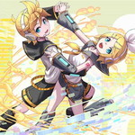

沙房 イア

マッキ・サエッタ
榎木津 礼二郎
アリス・サイオン
ダル太夫
古澤頼子
佐藤 健一
葛飾 春夜
ヴァーミリオン・スカーレット
廃道 響
タアタアンワ・アシリレラ
"Cannibal" Re-9
闇坂 紫子
クイーン・ガーランド
冬辺 続
久遠
①：
あなたが命中判定に倍差成功またはAE【ヘッドショット】に成功した場合、ターン終了時に宣言できる。
あなたはバトルから離脱する。
あなたはバトルから離脱する。
②：
あなたがAE【ヘッドショット】に成功した場合、攻撃したユニットを対象として発動できる。
対象は解除パラメータ【耐】の任意継続効果扱いで【 視覚異常 】を発症する。
対象は解除パラメータ【耐】の任意継続効果扱いで【 視覚異常 】を発症する。
運命が閉ざされているというならば、自らがその鍵になるしかない。
①：
あなたのSPE【瞬動】はエンドフェイズ毎に使用回数がリセットされる。
②：
あなたは自身を対象にAE【エール】を使用できる。
この効果で使用する【エール】の効果は倍となる。
この効果で使用する【エール】の効果は倍となる。
例えば左右の足は互いに支え合って前に進むが、それを「絆」と呼んだりはしない。
①：
あなたは行為発動による情報を秘話で取得する。
その情報をあなたはPL発言で共有できない。
その情報をあなたはPL発言で共有できない。
②：
暴走率を１５％上昇させて発動する。
エンドフェイズまで、あなたは【 ダメージロール 】【 命中・回避判定 】【 解除判定 】に【＋３ｄ】のボーナスを得る。
エンドフェイズまで、あなたは【 ダメージロール 】【 命中・回避判定 】【 解除判定 】に【＋３ｄ】のボーナスを得る。
「そうだ！ 僕だ。お待ちかねの榎木津礼二郎だ！」
①：
あなたは１１点以上PPを消費してクリーチャーを創造することができる。
この効果で創造したクリーチャーは、NPC特性【複製無効】を得る。
この効果で創造したクリーチャーは、NPC特性【複製無効】を得る。
②：
あなたはクリーチャー【モッガディート】に特殊武装を装備させる事ができる。
相棒が優秀でなければ、のんびり胡坐などかいていられない。
①：
技能判定を行う場合、あなたの【力技】の数値は【１２】として扱う。
②：
自プリアクション直前に暴走率を５％上昇させて発動できる。
あなたのHPコンディションロールを＋１２する。
あなたのHPコンディションロールを＋１２する。
桜は“達磨”に顕れる。
○：
あなたが【HS】に成功した場合、そのユニットを対象として以下の効果から１つを選んで発動できる。
その効果を適用する。
●対象の消費アイテムを確認し、その中から１つを選択してあなたのアイテム欄に移動させる。
●対象が次のプリアクションを行う間、その武器攻撃力を【０】にする。
●エンドフェイズまで、対象は【 目標操作>>エクス・リブリス 】状態となる。
その効果を適用する。
●対象の消費アイテムを確認し、その中から１つを選択してあなたのアイテム欄に移動させる。
●対象が次のプリアクションを行う間、その武器攻撃力を【０】にする。
●エンドフェイズまで、対象は【 目標操作>>エクス・リブリス 】状態となる。
お宝も視線も心も、全てがあなたに奪われる。
①：
あなたはカルマ【修羅】を得る。
②：
あなたは【気絶】【瀕死】状態の場合でも、エンドフェイズまで戦闘不能にならない。
（【即死】した場合は通常通り戦闘不能となる）
（【即死】した場合は通常通り戦闘不能となる）
あなたを殺したことを、彼は死ぬほど後悔するだろう。
①：
あなたはSPE【共鳴】およびカルマ【職人】を得る。
②：
あなたがクリーチャーを創造した場合に発動できる。
任意の取得探索技能を一つ得る。
任意の取得探索技能を一つ得る。
美しきを、美しいままに。
この特性の②の効果はセッション中に１度しか発動できない。
①：
あなたはSPE【逆転】を得る。
②：
自身または味方が攻撃を受けた時に発動できる。
その攻撃と効果を無効にする。
その攻撃と効果を無効にする。
過去は変えられないが、未来は選択することができる。
あなたの場合はその逆だ。
あなたの場合はその逆だ。
この特性の②の効果はセッション中に２度まで使用できる。
①：
あなたはカルマ【探索者】を得る。
②：
あなたを含む味方の誰かが、技能判定に成功した場合に発動できる。
その判定は倍差成功したものとして扱う。
（因子ダイスも獲得できる。達成値が変化するわけではない）
その判定は倍差成功したものとして扱う。
（因子ダイスも獲得できる。達成値が変化するわけではない）
どんな知識も絶対に有益とは限らないが、絶対に無駄とも限らない。
①：
あなたが自身のクリーチャーと共鳴Aを行う場合、
クリーチャーの命中達成値にあなたの命中達成値を加算することができる。
クリーチャーの命中達成値にあなたの命中達成値を加算することができる。
②：
あなたが創造PP１５点でクリーチャーを創造した場合、
そのクリーチャーは【鷹の目】を得る。
そのクリーチャーは【鷹の目】を得る。
羽ばたくことを諦めるには、空はあまりに広すぎた。
①：
あなたはカルマ【二枚舌】を得る。
②：
あなたの共鳴Aが命中した場合に発動する。
その攻撃対象ユニットは、次の命中回避判定に【－１０】のペナルティを受ける。
その攻撃対象ユニットは、次の命中回避判定に【－１０】のペナルティを受ける。
怪物を仕留めるためには、それ以上の怪物が要る。
①：
あなたはカルマ【伏兵】を取得する。
②：
あなたがAE【才気煥発】を使用する場合、PPを消費する代わりに、
暴走率を【＋２ｄ】することができる。
暴走率を【＋２ｄ】することができる。
その閃きに根拠はない。意味も特にない。
①：
バトル開始毎に、あなたはカルマ【英雄】を得る。
この効果で獲得したカルマ【英雄】の効果対象は【他者】となる。
この効果で獲得したカルマ【英雄】の効果対象は【他者】となる。
②：
あなたと同シーンに存在する全てのユニットは、その陣営によって以下の効果を得る。
●味方：命中判定に、あなたの【威圧÷３】のボーナスを得る。
●敵 ：命中判定に、あなたの【威圧÷３】のペナルティを得る。
●味方：命中判定に、あなたの【威圧÷３】のボーナスを得る。
●敵 ：命中判定に、あなたの【威圧÷３】のペナルティを得る。
直々にその腕を振るうまでもない。
ただ立っているだけで十分だ。
ただ立っているだけで十分だ。
①：
同シーン中、あなたとその味方に付与される【付加効果/強化系】は【SE/コンティニュー（1R）】を適用する。
②：
バトル中、PPを【７】支払って宣言できる。
このバトル中、あなたの全ての武器攻撃は【応用技/Never Ending】の効果を適用する。
このバトル中、あなたの全ての武器攻撃は【応用技/Never Ending】の効果を適用する。
最後がなければ最初もない。
①：
あなたがダメージを受けたポストアクション終了後、任意の応用技をサブアクションとして宣言できる。
②：
あなたが【AE/ペインフル】を宣言する場合、その成否判定は自動成功となる。
（耐久ロールは行わず、カウンター部分の命中回避判定のみ行う）
（耐久ロールは行わず、カウンター部分の命中回避判定のみ行う）